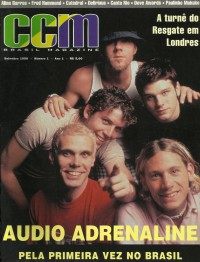
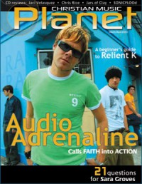
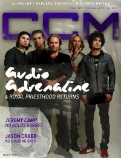

Audio AdrenalineOn the cover
September 1998
CCM Brasil |

March 2003
Christian Music Planet |

March 2013
CCM Digital | Media coverage- Oct 1992 in CCM "Hot New Bands", by Anya Krause, Dan MacIntosh
- Nov 1992 in CCM "In Concert: Edina Community Center, Edina Minnesota", by Bob Paulson
- Jan 1993 in Syndicate "Spotlight: Hyped For The Faith", by Brett Kratzer
- Jan 1993 in Syndicate "Concert Review: The Power of One Fest, Brown County Arena, Green Bay, WI", by Jamie Lee Rake
- Jul 1993 in The Lighthouse "Audio Adrenaline", by J. Warner Soditus
- Dec 1993 in CCM "Audio Adrenaline's New Worldview", by Amy E. Dixon
- Jan 1994 in Campus Life "Expressions: Radical News", by Jim Long
- Apr 1994 in CCM "In Concert: Knoxville Civic Auditorium, Knoxville, TN", by Rhonda Miskowski
- Sep 1994 in Heaven's Metal "Concert Review: Michael Sweet (opening for Audio Adrenaline, dc Talk)", by Brian Rodgers
- Oct 1994 in CCM "Poster: Audio Adrenaline"
- Dec 1994 in CCM "Poland Welcomes Audio Adrenaline and Christian Message", by April Hefner
- Apr 1995 in CCM "Prayer 101?", by Perucci Ferraiuolo
- May 1995 in Campus Life "Audio Adrenaline's Big Sound", by Chris Lutes
- May 1995 in CCM "In Concert: Alabama Theatre, Birmingham, AL", by Lucas W. Hendrickson
- Apr 1996 in CCM "Flower Power", by Marykay Selby
- Apr 1996 in HM "In Full Bloom", by David Muttillo
- May 1996 in CCM "In Concert: Municipal Auditorium, Nashville, TN", by Michael Ciani
- Nov 1996 in HM "Hardnews: Pure Adrenaline"
- Feb 1997 in CCM "In Concert: Civic Center Coliseum, Birmingham, AL", by Karly Randolph-Pitman
- Mar 1997 in Living With Teenagers "This Audio Pumps Up Your Teenager's Adrenaline", by Mike Nappa, Amy Nappa
- Jul 1997 in 7ball "The Resurrection of a Generation", by Ginny McCabe
- Sep 1997 in 7ball "The Resurrection of a Generation", by Ginny McCabe
- Nov 1997 in 7ball "The Resurrection of a Generation", by Ginny McCabe
- Jan 1998 in 7ball "The Resurrection of a Generation", by Ginny McCabe
- Jan 1998 in HM "Blitzin' Zombies", by Brian Vincent McGovern
- Feb 1998 in CCM "Return of the Living Dead", by Brian Quincy Newcomb
- Apr 1998 in CCM "In Concert: Mabee Center, Tulsa, OK", by Chad Bonham
- Jul 1998 in Campus Life "Adrenaline Rush!", by Chris Lutes
- Sep 1998 in CCM Brasil "Some Kind of Journey chega ao Brasil", by Brian Quincy Newcomb
- Nov 1998 in CCM Brasil "O que Rola: Mundo Do Rock: Audio Adrenaline in Osasco, SP; Bride in several cities; Oficina G3, Catedral, and other local acts also noted", by Karina Gouêva
- Apr 1999 in CCM "On The Beat: Pope Visits St. Louis", by Brian Quincy Newcomb
- Nov 1999 in 7ball "An Old Dog's New Hits", by Marcia Bartenhagen
- Apr 2000 in CCM "In Concert: Bloomington Assembly of God, Bloomington, MN", by Steve Knight
- Sep 2000 in Campus Life "Virtual Play with Audio A", by Martin Cockroft
- Mar 2003 in 7ball "It's Go Time", by Debra Akins
- Mar 2003 in Christian Music Planet "Walking The Talk", by Michael Fernandez
- Apr 2003 in CCM "Survival of the Fittest", by Christina Farris
- Jun 2003 in CCM "Story Behind the Song: Hands and Feet", by Jessica Robin
- Mar 2004 in CCM "Standing Room Only: Newsong's Winter Jam", by Andy Argyrakis
- Jul 2004 in CCM "Get Real: Audio Adrenaline", by Stephanie Ottosen
- Sep 2004 in CCM "Insider: Road Warriors"
- Jun 2005 in CCM "By The Numbers: Audio Adrenaline", by Gregory J. Rumburg
- Aug 2005 in CCM "List-O-Rama: Before They Put The Hip In Hip-Hop", by Chris Well
- Sep 2005 in CCM "The Fantastic Four", by Christina Farris
- Sep 2005 in CCM "Standing Room Only: Shinefest", by Andy Argyrakis
- Oct 2005 in CCM "Get Real: Audio Adrenaline", by Jay Swartzendruber
- Apr 2006 in CCM "!Farewells", by Lindsay Williams
- Aug 2006 in CCM "Out With A Bang", by David McCreary
- Nov 2006 in New Man "Music: Audio Adrenaline Says Audios", by Chad Bonham
- Mar 2010 in CCM Digital "Hands, Feet, & the Heartbeat of Haiti", by Andy Argyrakis
- Apr 2010 in CCM Digital "Hope Continued", by Matt Conner
- Oct 2012 in CCM Digital "2.0", by Katrina Beckham
- Nov 2012 in Relevant "The Drop: Kevin Max Makes A Big Move"
- Nov 2012 in CCM Digital "Musicians Corner: In the Studio: Audio Adrenaline", by Andrew Greer
- Jan 2013 in CCM Digital "On the Horizon", by Caroline Lusk
- Mar 2013 in Charisma "Inspire: Audio Adrenaline Bands Together to Help Orphans", by Felicia Abraham
- Mar 2013 in CCM Digital "Audio Adrenaline: A Royal Priesthood Returns", by Caroline Lusk
- Jun 2013 in CCM Digital "Tour Spotlight: Kings & Queens Tour, The Compass Church, Naperville, IL", by Andy Argyrakis
- Jul 2013 in CCM Digital "Sacrifice Required", by Caroline Lusk
- 15 May 2015 in CCM Digital "Hands On / Feet Forward", by Kevin Sparkman
- Nov 2017 in Relevant "The Drop: Current: Kevin Max Makes A Big, Big Move"
Albums & reviews:1991: My God / Peace and Quiet
1997: Some Kind of Zombie 1998: Some Kind of Journey [video] 2003: Alive
2005: Until My Heart Caves In 2006: Adios: The Greatest Hits 2007: Live From Hawaii: The Farewell Concert 2013: Big House to Ocean Floor 2015: Sound of the Saints Award Summary (Nominations / Wins)
Dove Awards1996 Dove Awards1997 Dove Awards1998 Dove Awards1999 Dove Awards- Rock Album: Some Kind of Zombie
- Modern Rock/Alternative Recorded Song: "Blitz"
2000 Dove Awards2001 Dove Awards- Rock Recorded Song: "Underdog"
2002 Dove Awards- Rock Recorded Song: "Will Not Fade"
2003 Dove Awards2004 Dove Awards2008 Dove Awards- Long Form Video: Live From Hawaii: The Farewell Concert
- Rock Album: Live From Hawaii: The Farewell Concert
2016 Dove Awards Grammy Awards1998 Grammy Awards- Best Rock Gospel Album: Some Kind of Zombie
1999 Grammy Awards- Best Rock Gospel Album: Underdog
2002 Grammy Awards- Best Rock Gospel Album: Lift
2003 Grammy Awards- Best Rock Gospel Album: Worldwide
2005 Grammy Awards- Best Rock Gospel Album: Until My Heart Caves In
Billboard Music Video Awards1994 Billboard Music Video Awards1998 Billboard Music Video Awards- Best Clip, Contemporary Christian: "Some Kind Of Zombie"
1999 Billboard Music Video Awards- Best Clip, Contemporary Christian: "Get Down"
Books about Audio Adrenaline
- "Audio Adrenaline" in The Encyclopedia of Contemporary Christian Music (Mark Allan Powell, 2002).
- "Audio Adrenaline" in The Billboard Guide to Contemporary Christian Music (Barry Alfonso, 2002).
|